Warning in readLines(file, warn = readLines.warn): incomplete final line found
on 'chapterauthors.yml'3 Exercise 2: VRI Forest Cover and Digital Imagery
Written by
Sarah Smith-Tripp
Lab Overview
British Columbia relies heavily on surveying from aerial imagery to understand forest health. Aerial surveys have been used throughout BC’s recent history to understand forest composition and health. Aerial imagery is the key input into the vegetation resource inventory (or VRI) used to understand the composition of BCs forests. The process has two phases:
Phase 1: Using aerial imagery, forests are divided into homogeneous areas called “polygons.”
Phase 2: Ground-reference plots are placed systematically throughout polygons. Ground-reference plots are used to determine the site-type or biogeoclimatic zone and subzone of each area. You can find more information on this process here.
These data are collectively used to obtain information on the forests of BC. However, since forests change over time, VRI also includes regular updates of original VRI data to reflect changes in forest composition associated with:
Large-scale natural disturbances: e.g., fires, insects, windthrow, etc.
Human disturbances: e.g., clear-cuts, partial harvests, roads, new urban areas, etc.
These new openings result in changes to polygon boundaries and attributes relative to prior dates for the same land area. In addition, the attributes of each forested polygon are forecasted for stand-level growth to the current date (labelled as “Projected”). For example, if the stand age was 50 years in 2000, the updated age (called “Projected Age”) in 2015 is 50+15=65 years. There are some attributes such as species composition that cannot be accurately updated via a forecast. At some point, a re-inventory is needed. Typically, the Province does not regularly update the VRI layers for disturbances on private lands. The VRI for MKRF was actually updated to an entirely new reference year in 2020. We’ve included this data with the course and will introduce it at the end of lab. You can see that the 2014 VRI is largely the same as the 1996 VRI, but when the VRI was updated to a new reference year there were many changes.
Learning Objectives
Examine differences in the 2014 VRI compared to forest cover layers
Complete an initial photo-interpretation for forest cover maps using the 2014 VRI standards. Your approach will use a 2D image, but photointerpreters normally use images “stereo-imagery” which combines images to create a 3D representation of the imagery.
Compare the aerial images to images from Landsat satellites and consider how these might be useful for updated forest land changes.
Task 1: Discover the difference between “Forest Cover” and VRI
Last week, we used forest cover polygons to look at the forest cover from 1989 and briefly compared changes between 1989 and 1999. These forest cover polygons were created using interpretation of aerial imagery. Both VRI and forest cover polygons intrept components of forests using aerial imagery. However, their standards for photo-interpretation are different.
In our dataset, the forest cover polygons are based on photointepretation of 1987 photos, while the 2014 VRI is based on a 19996 aerial survey. Forest cover polygons are updated for natural and human disturbances, whereas VRI polygons are updated for the same disturbances. VRI polygons are also projected to the updated year. Additionally, VRI includes information on four different forest structure layers, from top canopy to the shrub layer. In this lab, we will work with the top of canopy layer. You can find out more on what attributes are recorded in the VRI data dictionary.
Building Familiarity with VRI data
Step 1: Open QGIS and save a new map project. Set up this project similarly to how we did in Task 1 lab 1 (INCLUDE REFERENCE HERE).
Step 2: Add the following layers to your blank map:
- P_Boundary_MRKF
- P_BC_VRI_2014
- P_ForestCover_1989
Step 3: Select “P_BC_VRI_2014” and change the layer symbology. Change the outline to “white” ⬜change the fill color to “light grey” and increase the outline stroke width 0.2 mm. Click Apply and Ok.
Step 4: Select the “P_ForestCover_1989” and change the symbology. Change the outline color to “orange🟧”
Step 5: Compare the VRI polygons to the 2006 Orthomosaic. Are there areas where the VRI projection does not make sense? To answer this, set the fill color for the VRI to semi-translucent and zoom to: 1250396, 481902 (*make sure your map CRS is set to BC Conus Albers; EPSG 3005). You can paste these values into the coordinate box on the bottom of the screen.
Step 6: Load in P_ForestCover_2008. This is the updated forest cover layer as of 2006. Find the name of the forest disturbance that occurred in 2006 at the location identified in step 5
3.0.1 Question 1:
Which description of forest composition and structure (VRI and forest cover) has more polygons?
3.0.2 Question 2:
Which descriptor of forest composition has a larger average polygon? Which one has a larger maximum polygon?
3.0.3 Question 3:
What is the projected age for the polygon at this site? Does this make sense? Why or why not? Insert a screenshot (include a figure caption!) to support your answer.
3.0.4 Question 4:
Look for two other forest disturbances or land-cover changes anywhere in MKRF recorded in the 2006 orthomosaic but not recorded in the 2014 VRI.
3.0.5 Question 5:
Malcom Knapp is privately owned land, meaning not all disturbances are consistently added to VRI. Given this, what are some of the disadvantages of relying on VRI alone? What additional tools can we use to better update VRI? Respond in a clear and well written paragraph format.
Task 2: Segmenting Forest Polygons
Read through the photo-interpretation standards provided by the Ministry. Note that the linked version is version 5 - reflecting that these standards are fifth version of VRI photo-interpretation standards since 1999 (when the VRI program was established). Focus on Figure 2.1 and Figure 2.2. These show initial steps in segmenting the land base into forest cover polygons. You will be interpreting a 2006 photo of area of MKRF using these two figures and “heads-up digitizing.” Normally, this first step would be done using a 3-D view of overlapping aerial images. You will be using a 2-D view for this first step in photo-interpretation to get an idea of how this is initially done. These larger polygons would be further stratified using forest cover attributes, and all attributes added as documented in the VRI photo-interpretation standards.
Step 1 Add the 2008 and the 2006 aerial imagery to your map. Note that the 2008 photo is only part of the MRKF
Step 2 zoom into the three following locations below. Create a formatted table to answer question 6 (@sec-Q6)
Step 3 zoom into a clearcut location in 2008. Think about what characteristics support it is harvested
Question 6:
Zoom into the locations noted on the table. Use the 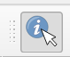 tool located in the upper right of QGIS to retrieve RGB values for the following areas. Once you have filled in the table, discuss why you think different landcovers have different pixel values.
Note
NOTE: Remember that for a color rendition of an image, white objects reflect high in all visual bands; green objects reflect higher in the green band; blue objects reflect higher in the blue band; red objects reflect higher in the red band; and black objects have low reflectance in all visual bands.
| E | N | Landcover | Red Brightness | Green Brightness | Blue Brightness |
|---|---|---|---|---|---|
| 1248400 | 481890 | ||||
| 1247760 | 848198 | ||||
| 1248195 | 483318 | ||||
| 1247019 | 483138 |
Question 7:
When you look at a clear cut area, what characteristics support an area is harvested? Consider size, shape, texture, proximity to other features, etc. List three specific characteristics to identify a harvested area that you could give to someone else who has never seen an above view of a clear cut.
Question 8:
Create a reference table that describes specific characteristics that can help differentiate land cover types using aerial imagery. For each feature in the below table include 3 characteristics of the different land covers.
| Land cover type | Key Characteristics |
|---|---|
| Road | |
| Partially Harvested Stand | |
| Hydro Electrical clearing |
Task 3: Understand Variability in Pixel Data
We have established an understanding of the key characteristics of different land cover types and how these relate to brightness values. We will now use QGIS to create a new polygon feature that will help better understand variability in pixel data, and how this variability can help us explore our datasets.
Step 1 Create a new shapefile layer by going to Layer -> Create a Layer -> Create a new shapefile layer
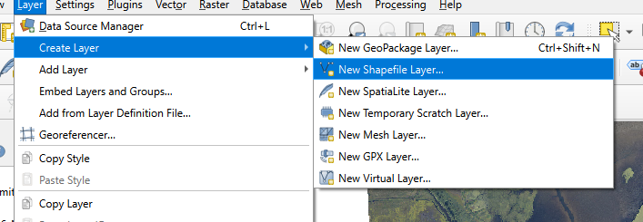
Step 2 Save your shapefile to the same location as your exercise two, name this layer “Landcover Types.shp”. For the Geometry Type select “polygon.” In the New Field window create a Text field called “class.” Make sure to click Add to Fields List. Click Ok. Your new layer should appear in the layers panel.
Step 3 Right click on your new layer in the layers panel. Select Toggle Editing. The layer can now be actively edited.
Step 4 Click on the polygon tool 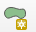 in the upper left of the screen. This tool allows you to add new polygons to your shapefile. To add a polygon, left-click to begin a shape and add addition vertices. To finish a shape right-click. Use this process to add polygons that cover (a) a fresh clearcut (b) a lake (c) an older clearcut (d) a mixed forest (e) coniferous forest in the 2006 RGB image. When you finish a polygon make sure to note the landcover type in your “class” field.
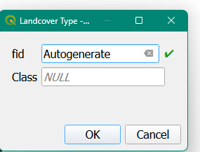
Step 5 once you have finished right-click on your layer in the Layers panel to save the layer edits. Additionally, change the symbology of this layer to show the individual layer attributes. See an example in Figure 3.1.
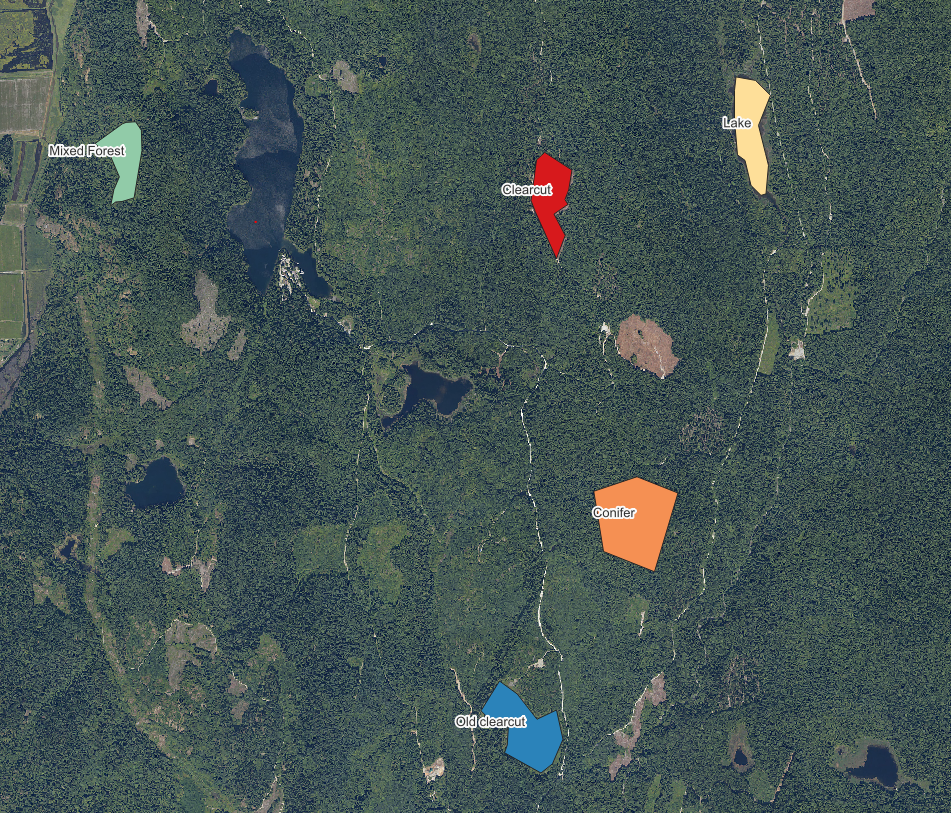
Step 5 We will now introduce the processing toolbox. This is a great resource for finding tools that help analyze spatial data. The processing toolbox is normally located on the upper right-hand of of the QGIS window. If it is not there, you can load it by going to View -> Panels -> Processing Toolbox.
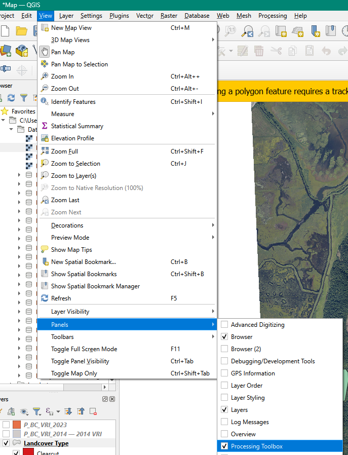
Step 6 In the search bar located at the top of the processing toolbox type in “Zonal” and select Zonal statistics. In the pop-up window make the following selections
- Input layer: Select your class polygons
- Raster layer: Select the 2006 RGB image
- Raster band: Select the green band
- Output column prefix: type “Brt” (for pixel brightness values)
- Right click on the “…” in statistics to calculate. In the new menu select (1) Mean (2) St Dec (2) Minimum and (3) maximum
- Save the file to the same location as your exercise 2
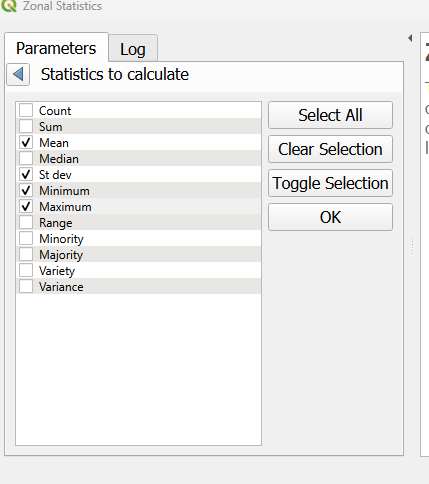
Step 7 Using the new shapefile, color the shapefile by mean brightness. Under symbology select “graduated” and for the color palette choose “greys.” At the top to the color palette window choose invert color ramp. Inverting the color ramp means that the polygons where the mean brightness values is low will be closer to black and polygons where the mean brightness is high will be closer to white.
Step 8 We will now create a new map layout to showcase some the forest cover polygons we have created. Go to file New print layout andcreate a new map layout named “forest cover polygons.” Make the orientation of new map horizontal. Our new map layout will have three different maps. The first, will describe the forest cover polygons we have created. The second, will describe in the mean brightness for the RGB data we have. Finally, we will have a third map that will look at the variability in these brightness responses.
Step 9 We’ll start with the map the describes our forest polygons.
- change the symbology of the forest polygons shapefile to give each polygon a unique color. Go to symbology -> categorized -> select your “class” field -> and classify. Click Apply but NOT ok.
- On the left-hand of this pop-up window go to “labels” and select Single Label for Value select your “class” field.
- Click on Buffer and check the box that says Draw text Buffer this will put a small white buffer around our labels
- Click on Placement change the mode to Offset from centroid. Click the box that says Allow placing of labels outside of polygons. Change the Quadrant to the upper-left
- Click Apply - labels should now appear on the map canvas
- Click Ok.
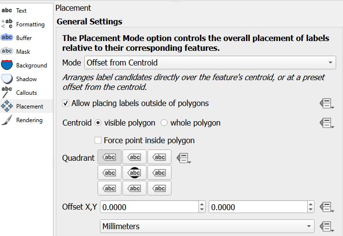
- Navigate back to your map layout. Insert a new map for your forest polygons. In the background, include the BC VRI and 2008 RGB image. The screenshot below highlights what should be included. Set the map scale to 70000 to best include all of MKRF.
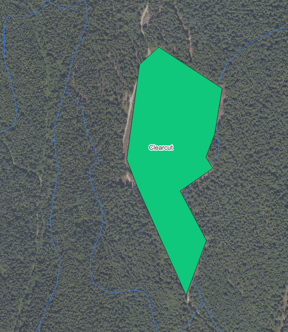
In the right-hand side under Layers click the checkmark that says Lock layers and Lock styles for Layers this prevents your map from automatically updating.
Add a legend. In Legend items uncheck “auto update” and remove all legend items are are not your forest cover polygons. On the forest polygon layer right-click to check “hidden.” In the Title for the legend put “Forest Polygon Class”
Right click on the map on your map layout to copy and paste the map so there is a duplicate map next to your forest polygon map. With this map selected uncheck the Lock layers and Lock styles for Layers. Navigate back to your map canvas
Step 9 We’ll now map the average green brightness value in these polygons.
- Using your layer that we calculated zonal statistics on, which should still be colored black-to-white. Move this layer to the top of the map canvas.
- Navigate back to your map layout. With the copied map selected change the name to “zonal mean.” In the item properties tab click the circular “refresh” button. This will update the map to the current canvas layers. Click Lock layers and Lock styles for Layer.
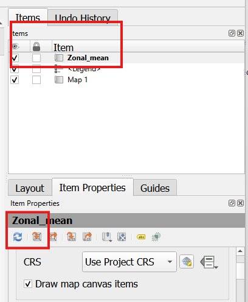 - Copy the Legend from your polygons layer. Change the reference map to the zonal statistics layer. In the legend properties check “update all”. Change the Title to “Mean Bit Brightness (Green Band)”.
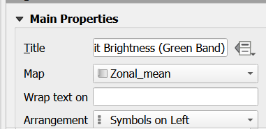 - Right click on the map on your map layout to copy and paste the map so there is a duplicate map next to your forest zonal statistics map. With this map selected uncheck the Lock layers and Lock styles for Layers. Navigate back to your map canvas.
Step 10 Follow a similar process to step 9, but this time change the zonal statistics layer to the standard deviation. See Figure 3.2 for an example of your final output.

Question 9:
How do values for your different forest polygons layer differ in terms of brightness? What feature had the highest greenness reflectance? Which feature had the most variable greenness reflectance? Use values to support your results.
Question 10:
Normally, photo-interpreters would have a 3-D view of a stereo-pair of photos and they could see and measure stand heights. What other information might help the photo-interpreter assign heights to each stand? HINTS: As well as imagery, what other information might they access? How do other attributes impact height?
Map 1:
Include your map describing your forest polygon layer and the associated brightness values from the 2006 orthophoto.
Task 4: Satellite Images Compared to Aerial Photographs
Images collected using satellites provide the base data used to create Google Maps, Google Earth Views, etc. Of these, data collected on Landsat satellites is very commonly used. However, other imagery is often needed to provide finer spatial details, historic views, and 3-D views. You will learn more about other imagery in FRST 538. For now, you will look at the Landsat imagery provided for MKRF and compare these to the aerial photographs. Specifically, you will look at how these images might be used to update for natural and human disturbances.
Step 1 Add the 2019 Landsat RGB image, keeping both the 2008 and 2006 orthoimages loaded. Clearly, there are differences in the spectral reflectance and the resolution of these two images. However, Landsat is free and is consistently capturing imagery from space every two-weeks (when it is cloud free).
Step 2 qualitatively compare the orthoimages from the satellite data. Use this to answer the last lab questiosn
Which year (1999 or 1989) had a large polygon size for western red-cedar dominated stands? Please answer in hectares.
Question 11:
If you were monitoring a forest area for harvest disturbances, would you choose to get new aerial photographs or would you use available Landsat data? Consider the costs, the spatial resolution of the images relative to the disturbance size, and the frequency that images are acquired.
Question 12:
What about using landsat data for something like small-scale wind damage? Or small-scale fires? What about roads?
Lab Questions & Deliverables
Complete answers to the following questions:
Question 1: Which description of forest composition and structure (VRI and forest cover) has more polygons?
Question 2: Which descriptor of forest composition has a larger average polygon? Which one has a larger maximum polygon?
Question 3: What is the projected age for the polygon at this site? Does this make sense? Why or why not? Insert a screenshot (include a figure caption!) to support your answer.
Question 4: Look for two other forest disturbances or land-cover changes anywhere in MKRF recorded in the 2006 orthomosaic but not recorded in the 2014 VR
Question 5: Malcom Knapp is privately owned land, meaning not all disturbances are consistently added to VRI. Given this, what are some of the disadvantages of relying on VRI alone? What additional tools can we use to better update VRI? Respond in a clear and well written paragraph format.
Question 6: Zoom into the locations noted on the table. Use the tool located in the upper right of QGIS to retrieve RGB values for the following areas. Once you have filled in the table, discuss why you think different landcovers have different pixel values.
Pixel brightness values for different land cover types in MKRF E N Landcover Red Brightness Green Brightness Blue Brightness 1248400 481890 1247760 848198 1248195 483318 1247019 483138 Question 7: When you look at a clear cut area, what characteristics support an area is harvested? Consider size, shape, texture, proximity to other features, etc. List three specific characteristics to identify a harvested area that you could give to someone else who has never seen an above view of a clear cut.
Question 8: Create a reference table that describes specific characteristics that can help differentiate land cover types using aerial imagery. For each feature in the below table include 3 characteristics of the different land covers.
Question 9: How do values for your different forest polygons layer differ in terms of brightness? What feature had the highest greenness reflectance? Which feature had the most variable greenness reflectance? Use values to support your results.
Question 10: Normally, photo-interpreters would have a 3-D view of a stereo-pair of photos and they could see and measure stand heights. What other information might help the photo-interpreter assign heights to each stand? HINTS: As well as imagery, what other information might they access? How do other attributes impact height?
Question 11: If you were monitoring a forest area for harvest disturbances, would you choose to get new aerial photographs or would you use available Landsat data? Consider the costs, the spatial resolution of the images relative to the disturbance size, and the frequency that images are acquired.
Question 12. What about using landsat data for something like small-scale wind damage? Or small-scale fires? What about roads?
Complete Maps for :
- Your photo-interpreted forest polygons. Include the mean and standard deviation for the green birghtness values form the 2006 orthomosaic.
- Make sure that your map includes:
- A title
- A scale bar
- A north arrow
- A proper legend